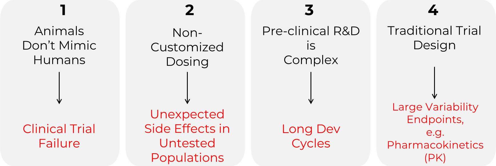
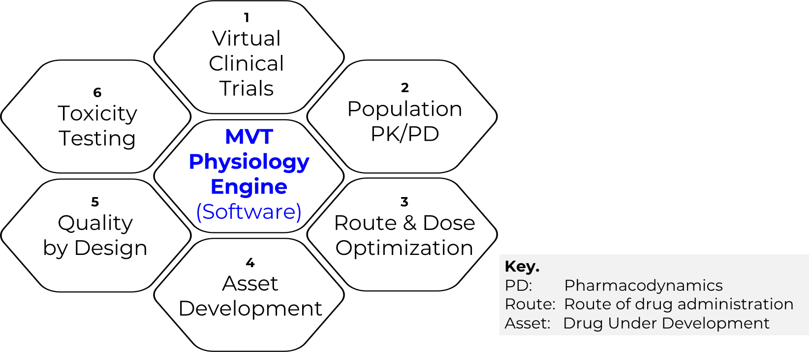
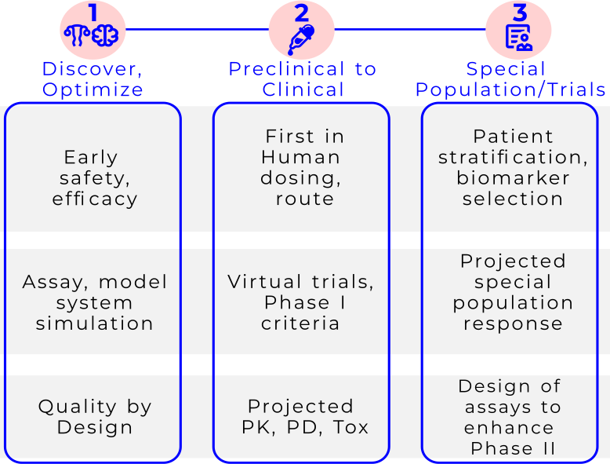
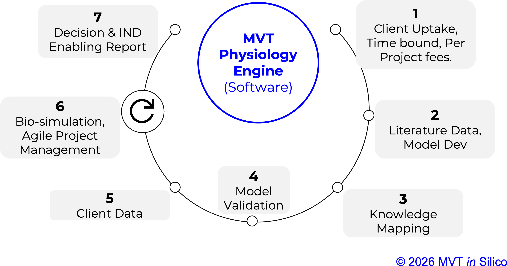
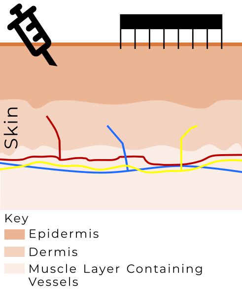

Our Platform & Services
MVT in Silico is a drug development company building our proprietary cyber-physical platform designed to deliver human relevant pharmacometrics. Our mission is to reduce (and ultimately replace) animal experimentation, lower the burden of Phase I clinical trials, and provide regulatory grade evidence that reduces friction during drug approval. As a downstream benefit, our platform supports foundational advances in TechBio and basic science. Our MVP is scheduled for launch later this year (2026), which is part of our staggered multiyear 3 stage commercial launch.
There are several problems baked into traditional research practices, a few of which are shown. Consequently, the endpoints or research outcomes are often not reproducible, have poor translation, or there is a critical failure risk at later stages. In addition, the regulatory landscape is changing. A few problems and their potential consequences are shown in the figure below (Figure 1).

Platform
To address these challenges, we have developed an industry standard scientific software framework (Figure 2, below). It is a white box solution that provides almost all cause-effect relationships that a typical product development workflow needs. Our IP is the new software codes, algorithms, solvers, and data handling.You as the client will clarify the problem you are solving into a well defined question, and we will use our platform to provide you with the best possible answer. We will also provide you with the data and code that supports our answer, so that you can verify and reproduce our work.

How it works.
A graphical depiction of product development workflows is shown in the figure below (Figure 3).
The process (Figure 4) starts with deep discussions with you with a proposal of work. We then use our AI enabled literature & model scouting to establish the best possible model structure and parameters for the physiology, biochemistry, and phrmacology you are interested in. After than, we perform comprehensive simulations, and provide you with the reccommendations. You are also provided with materials that you can use with various stakeholders.

Current Users
Our recent pilots in IVF endocrine disorders (Figure 5) and neurovascular disorders (undisclosed at time or writing this page) have given validation to our technology, clarified opportunities, and initiated work leading into new IP.